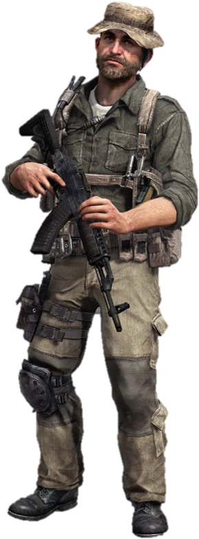

First Person Shooters are the most well known genre in video games. The genre is mostly used in Survival type of situations and Military situations since most of the time the players would use guns. You end up seeing how guns and grenades are used even fictional weaponary that They are mainstream because of the games playerbase.